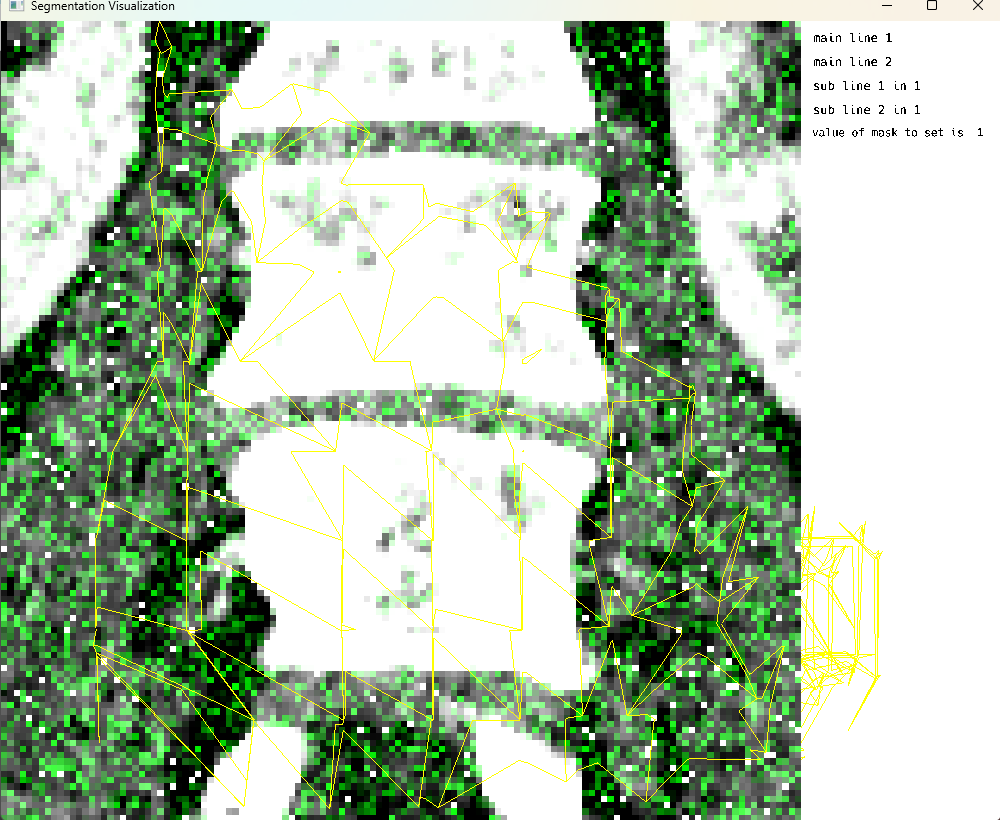
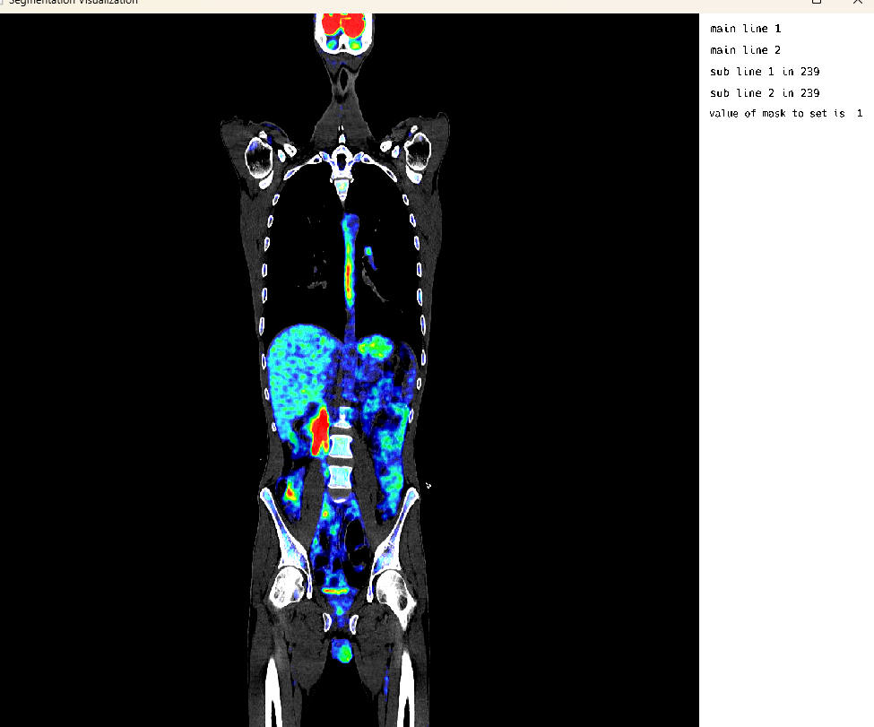

A Digital Twin approach for Advanced Supervoxel Visualization for Multi-Image View in Imaging
Hello Everyone! 👋
I am Divyansh, an undergraduate student from Guru Gobind Singh Indraprastha university, majoring in Artificial Intelligence and Machine Learning. Stumbling upon projects under the Juliahealth sub-ecosystem of medical imaging packages, the intricacies of imaging modalities and file formats, reflected in their relevant project counterparts, captured my interest. Working with standards such as NIfTI (Neuroimaging Informatics Technology Initiative) and DICOM (Digital Imaging and Communications in Medicine) with MedImages.jl, I became interested in the visualization routines of such imaging datasets and their integration within the segmentation pipelines for modern medical-imaging analysis.
In this post, I’d like to summarize what I did this summer and everything I learned along the way, contributing to MedEye3d.jl medical imaging visualizer under GSOC-2025!
If you want to learn more about me, you can connect with me on LinkedIn and follow me on GitHub
Background
What is MedEye3d.jl?
MedEye3D.jl is a package under the Julia language ecosystem designed to facilitate the visualization and annotation of medical images. Tailored specifically for medical applications, it offers a range of functionalities to enhance the interpretation and analysis of medical images. MedEye3D aims to provide an essential tool for 3D medical imaging workflow within Julia. The underlying combination of Rocket.jl and ModernGL.jl ensures the high-performance robust visualizations that the package has to offer.
MedEye3d.jl is open-source and comes with an intuitive user interface (To learn more about MedEye3d, you can read the paper introducing it here [1]). # MedEye3d Walkthrough under various stress testing routines
__ __ _ _____ _____ _
| \\/ | ___ __| | ____| _ ___|___ / __| |
| |\/| |/ _ \\/ _` | _|| | | |/ _ \\ |_ \\ / _` |
| | | | __/ (_| | |__| |_| | __/___) | (_| |
|_| |_|\\___|\\__,_|_____\\__, |\\___|____/ \\__,_|
|___/
Make sure to export JULIA_NUM_THREADS=3,1 to run MedEye3d
Check Julia Threading Configuration
This cell verifies the threading configuration in Julia, which is important for MedEye3d performance. We check both the default and interactive thread counts to ensure optimal parallel processing.
using Base.Threads
println(nthreads(:default))
println(nthreads(:interactive))Initialization of path variables and function arguments
MedEye3d Package and Data Setup
This cell prepares the MedEye3d package and defines paths to various medical imaging data files. These include CT scans, PET scans, DICOM files, and HDF5 files. The paths need to be modified based on your downloaded data locations. The cell also defines arguments for both single image and multi-image display modes.
using MedEye3d
#Data downloaded from the following google drive links :
# https://drive.google.com/file/d/1Segr6BC_ma9bKNmM8lzUBaJLQChkAWKA/view?usp=drive_link
# https://drive.google.com/file/d/1PqHTQXOVTWx0FQSDE0oH4hRKNCE9jCx8/view?usp=drive_link
#modify paths to your downloaded data accordingly
ctNiftiImage = "/home/dorachan/Downloads/ct_soft_pat_3_sudy_0.nii.gz"
petNiftiImage = "/home/dorachan/Downloads/pet_orig_pat_3_sudy_0.nii.gz"
newImage = "/home/dorachan/Downloads/volume-0.nii.gz"
strangeSpacingImage = "/home/dorachan/Downloads/Output Volume_1.nii.gz"
extremeTestImage = "/home/dorachan/Downloads/extreme_test_one.nii.gz"
bmaNiftiImage = "/home/dorachan/Downloads/bma.nii.gz"
h5File = "/home/dorachan/Downloads/locc.h5"
h5NiftiImage = "/home/dorachan/Downloads/hdf5.nii.gz"
firstDicomImage = "/home/dorachan/Desktop/julia_stuff/MedImages.jl/test_data/ScalarVolume_0/"
NOTE = "only one type of modality at a time in multi-image is supported"
@info NOTE
# For Single Image Mode
dicomImageArg = (firstDicomImage,"CT")
petImageArg = (petNiftiImage, "PET")
ctImageArg = (ctNiftiImage, "CT")
h5ImageArg = (h5NiftiImage, "CT")
# -- Overlaid images in SIngle image mode (Requires work)
petOverlaidImagesArg = [ctImageArg, petImageArg]
#For multi image display
dicomImagesArg = [[dicomImageArg],[dicomImageArg]]
petImagesArg = [[petImageArg], [petImageArg]]
ctImagesArg = [[ctImageArg],[ctImageArg]]
h5ImagesArg =[[h5ImageArg], [h5ImageArg]]NOTE: Only one type of modality at a time in multi-image is supported.
For Single Image Mode: - dicomImageArg = (firstDicomImage, “CT”) - petImageArg = (petNiftiImage, “PET”) - ctImageArg = (ctNiftiImage, “CT”) - h5ImageArg = (h5NiftiImage, “CT”)
For Overlaid images in Single image mode (Requires work): - petOverlaidImagesArg = [ctImageArg, petImageArg]
For multi image display: - dicomImagesArg = [[dicomImageArg],[dicomImageArg]] - petImagesArg = [[petImageArg], [petImageArg]] - ctImagesArg = [[ctImageArg],[ctImageArg]] - h5ImagesArg = [[h5ImageArg], [h5ImageArg]]
Single Image Display: PET Modality

Single Image Display: PET Modality Visualization
This cell visualizes a PET (Positron Emission Tomography) scan in single image mode. The MedEye3d package displays the medical image data, showing the PET scan in an interactive 3D view. Note that crosshair rendering is currently only supported in multi-image display mode.
using MedEye3d
medEyeStruct = MedEye3d.SegmentationDisplay.displayImage(petImageArg) #singleImageDisplaySingle Image Mode: CT Modality

Single Image Display: CT Modality Visualization
This cell visualizes a CT (Computed Tomography) scan in single image mode. The MedEye3d package displays the medical image data, showing the CT scan in an interactive 3D view. Similar to the PET visualization, crosshair rendering is currently only supported in multi-image display mode.
using MedEye3d
medEyeStruct = MedEye3d.SegmentationDisplay.displayImage(ctImageArg) #singleImageDisplaySingle Image Mode: Dynamic Supervoxels From HDF5

Single Image Display: Dynamic Supervoxels from HDF5
This cell demonstrates the visualization of dynamic supervoxels from an HDF5 file. Supervoxels are used to partition the 3D volume into uniform regions with similar characteristics. This approach is particularly useful for segmentation tasks in medical imaging, where regions of interest need to be analyzed separately.
using MedEye3d
# Supervoxels
# For conversion of h5 to nifti
MedEye3d.ShadersAndVerticiesForSupervoxels.populateNiftiWithH5(ctNiftiImage, h5File, h5NiftiImage)
# for visualization
supervoxelDict = MedEye3d.ShadersAndVerticiesForSupervoxels.processVerticesAndIndicesForSv(h5File, "tetr_dat")
medEyeStruct = MedEye3d.SegmentationDisplay.displayImage(h5ImageArg; all_supervoxels=supervoxelDict)During visualization: - Generating supervoxels for axis 1 - Generating supervoxels for axis 2 - Generating supervoxels for axis 3 - Supervoxels generated for all axes
Single Image Mode: Modification of Display Data on the screen

This cell demonstrates the modification of display data on the screen. The workflow involves: 1. Using MedEye3d.ShadersAndVerticiesForSupervoxels.populateNiftiWithH5() for conversion of h5 to nifti 2. Using MedEye3d.ShadersAndVerticiesForSupervoxels.processVerticesAndIndicesForSv() for visualization 3. Using MedEye3d.DisplayDataManag.getDisplayedData() to retrieve displayed data 4. Modifying the data using MedEye3d.DisplayDataManag.setDisplayedData() The system provides a message “look here” with the type of displayData, which in this case is Vector{Array{Float32, 3}}.
using MedEye3d
# Supervoxels
# For conversion of h5 to nifti
MedEye3d.ShadersAndVerticiesForSupervoxels.populateNiftiWithH5(ctNiftiImage, h5File, h5NiftiImage)
# for visualization
supervoxelDict = MedEye3d.ShadersAndVerticiesForSupervoxels.processVerticesAndIndicesForSv(h5File, "tetr_dat")
medEyeStruct = MedEye3d.SegmentationDisplay.displayImage(h5ImageArg; all_supervoxels=supervoxelDict)
# For modification of display data
displayData = MedEye3d.DisplayDataManag.getDisplayedData(medEyeStruct, [Int32(1), Int32(2)]) #passing the active texture number
#we need to check if the return type of the displayData is a single Array{Float32,3} or a vector{Array{Float32,3}}
# now in this case we are setting random noise over the manualModif Texture voxel layer, and the manualModif texture defaults to 2 for active number
displayData[2][:, :, :] = randn(Float32, size(displayData[2]))
@info "look here" typeof(displayData)
MedEye3d.DisplayDataManag.setDisplayedData(medEyeStruct, displayData)Single Image Mode: Overlaid Studies

Single Image Mode: Overlaid Studies
This cell demonstrates the visualization of overlaid medical imaging studies. In this example, CT and PET scans of the same patient are loaded and visualized together, allowing for comparison and correlation of different imaging modalities. The ITK-style workflow is used for loading and processing the images.
using MedEye3d
medEyeStruct = MedEye3d.SegmentationDisplay.displayImage(petOverlaidImagesArg)The ITK-style workflow outputs include: - Loading overlaid images using ITK-style workflow - Loading CT: /home/dorachan/Downloads/ct_soft_pat_3_sudy_0.nii.gz - Loading PET: /home/dorachan/Downloads/pet_orig_pat_3_sudy_0.nii.gz - CT size from SITK: (512, 512, 976) - PET size from SITK: (200, 200, 488) - CT spacing from SITK: (0.9765625, 0.9765625, 1.0) - PET spacing from SITK: (4.0728302001953125, 4.0728302001953125, 2.0) - Resampling PET to CT space… - Final CT size: (512, 512, 976) - Final PET size: (512, 512, 976) - Fixed PET texture numb to 3 - Fixed PET range to: Float32[0.13950741, 3457.534]
Multi Image Mode: Crosshair rendering

Multi Image Mode: Crosshair rendering
This cell demonstrates multi-image display mode with crosshair rendering functionality. The crosshair feature allows users to visualize corresponding locations across multiple medical images simultaneously, which is particularly useful for comparing different imaging modalities or different time points of the same patient. Note that on-screen voxel modification is currently only supported in single image display mode.
using MedEye3d
medEyeStruct = MedEye3d.SegmentationDisplay.displayImage(h5ImagesArg) #multi image displaysKey Features Demonstrated
Supervoxel Visualization
- Dynamic supervoxel rendering from HDF5 files
- Generation of supervoxels for all three axes (1, 2, and 3)
- Partitioning of 3D volume into uniform regions with similar characteristics
- Efficient rendering of supervoxel boundaries for segmentation tasks
Multi-Modal Visualization
- Support for CT, PET, and other imaging modalities
- ITK-style workflow for image loading and processing
- Automatic resampling to common coordinate space
- Overlay capabilities for comparison of different scans
On-Screen Data Modification
- Real-time modification of displayed voxel data
- Access to display data via
getDisplayedData()function - Modification capabilities via
setDisplayedData()function - Non-destructive processing with original data preservation
Performance Optimizations
- Efficient handling of large medical datasets
- Real-time rendering capabilities
- Memory management for complex visualizations
- Cross-platform compatibility
Technical Details
Threading Configuration
- Requires
JULIA_NUM_THREADS=3,1for optimal performance - Uses Julia’s Base.Channel for event and state management (improved from GSOC 2024)
- Proper handling of concurrent operations
Visualization Capabilities
- Single and multi-image display modes
- Crosshair rendering for multi-image alignment
- Dynamic supervoxel boundary visualization
- Real-time modification capabilities
Data Format Support
- CT and PET scan visualization
- DICOM format handling
- HDF5 integration for supervoxel data
- ITK-style workflows for image processing
Acknowledgements 🙇♂️
- Jakub Mitura: aka, Dr. Jakub Mitura
- Carlos Castillo Passi: aka, cncastillo
- Jacob S. Zelko: aka, TheCedarPrince
I would like to thank my mentor Dr. Jakub Mitura, for his continued support and guidance throughout this second year of collaboration on the MedEye3d.jl project. The technical insights and feedback provided throughout the development process were invaluable in achieving the project goals. I would also like to thank Jacob Zelko, for leading the JuliaHealth community with expertise and fostering collaboration among community members. My sincere gratitude towards your continued support, help and guidance through this fellowship year.
Note: This blog post was drafted with the assistance of Agentic technologies to support grammar, clarity and structure.
References
Citation
@online{goyal2025,
author = {Goyal, Divyansh},
title = {A {Digital} {Twin} Approach for {Advanced} {Supervoxel}
{Visualization} for {Multi-Image} {View} in {Imaging}},
date = {2025-11-05},
langid = {en}
}